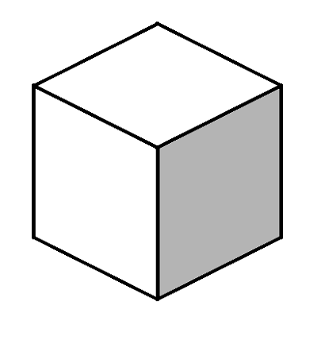
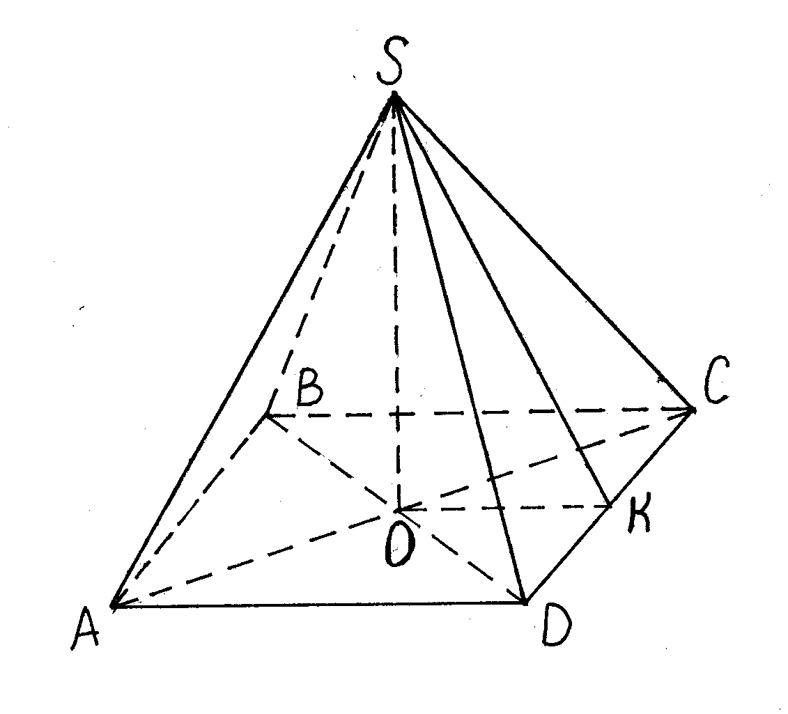
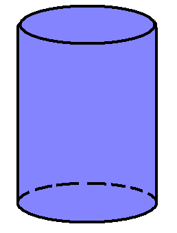

3D объекты
Главная
3D объекты
Словарь
Жанры
3D объекты
Объемные детали Как вы уже успели заметить, отдельные здания или целый комплекс домов только тогда становятся интересными, когда фасады оживляются благодаря окнам и дверям И неважно, находятся они под наклоном или нет. Действуют те же правила, что и для всего здания: есть линия горизонта и две точки схода. Чтобы правильно нарисовать откос (отмечено зеленым цветом), подоконник (отмечено красным цветом) или окон- дверям и лестницам. Свет и тешрые появляются на рисунке с noi штриховки, тоже вносят вклад создание объема. Объёмную перемычку (синий цвет), при тoм окно не только, как некое отверстие, но и как коробочку. Нарисуйте тонко все скрытые линии. Вы знаете все горизонтальные линии ведут к точкам схода.
Примеры:



